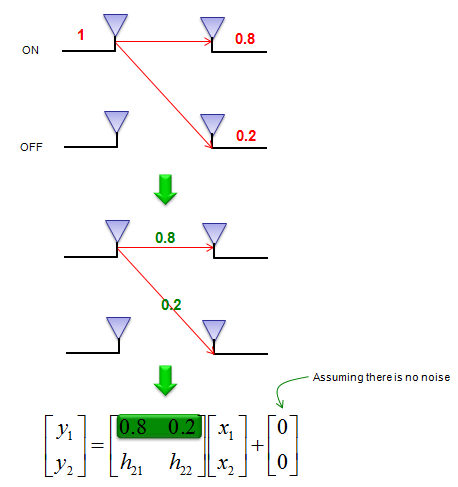

|
Communication - Channel Estimation Home : www.sharetechnote.com |
|
As I explained in other pages, in all communication the signal goes through a medium (called channel) and the signal gets distorted or various noise is added to the signal while the signal goes through the channel. To properly decode the received signal without much errors are to remove the distortion and noise applied by the channel from the received signal. To do this, the first step is to figure out the characteristics of the channel that the signal has gone through. The technique/process to characterize the channel is called 'channel estimation'.
There are many different ways for channel estimation, but fundamental concepts are similar. The process is done as follows.
i) set a mathematical model to correlate 'transmitted signal' and 'recieved signal' using 'channel' matrix. ii) Transmit a known signal (we normally called this as 'reference signal' or 'pilot signal') and detect the received signal. iii) By comparing the transmitted signal and the received signal, we can figure out each elements of channel matrix.
Let's assume that we have a communication system as shown below. x(t) indicates the transmitted signal and y(t) indicates the received signal. When x(t) gets transmitted into the air (channel), it gets distorted and gets various noise and may interfere each other. so the recieved signal y(t) cannot be same as the transmitted signal x(t).
This relation among the transmitted signal, received signal and channel matrix can be modeled in mathematical form as shown below.
In this equation, we know the value x1,x2 (known transmitted signals) and y1,y2 (detected/recieved signal). The parts that we don't know is H matrix and noise (n1,n2). For simplicity, let's assume that there is no noise in this channel, meaning that we can set n1, n2 to be 0. (Of course, in real channel there are always noise and estimate noise is a very important part of channel estimation, but we assume in this example that there is no noise just to make it simple. I will add later the case with noise when I have better knowledge to describe the case in plain language).
Since we have a mathematical model, the next step is to transmit a known signal (reference signal) and figure out channel parameter from the reference signal.
Let's suppose we have sent a known signal with the amplitude of 1 through only one antenna and the other antenna is OFF now. Since the signal propagate through the air and it will be detected by both antenna at the reciever side. Now let's assume that the first antenna received the reference signal with the amplitude of 0.8 and the second antenna received it with amplitude of 0.2. With this result, we can figure out one row of channel matrix (H) as shown below.

Let's suppose we have sent a known signal with the amplitude of 1 through only the other (second) antenna and the first antenna is OFF now. Since the signal propagate through the air and it will be detected by both antenna at the reciever side. Now let's assume that the first antenna received the reference signal with the amplitude of 0.3 and the second antenna received it with amplitude of 0.7. With this result, we can figure out one row of channel matrix (H) as shown below.
Simple enough ? I think (hope) that you didn't have any problems with understanding this basic concept. But if you use this method exactly as described above, there would be some inefficiency. According to the concept explained above, there should be a moment when you transmit only reference signal without real data just to estimate the channel information, meaning that data rate will be decreased because of channel estimation process. To remove this inefficiency, the real communication system transmit the reference signal and data simulteneously. Now the question is "How can we implement the concept described above while transmitting the reference signal and data simultaneously ?". There can be several different ways to do this and different communication system would use a little bit of different methodology. In case of LTE as an example, we use the method described as shown below. In case of 2 x 2 MIMO in LTE, each sub frame has different locations for reference signal for each antenna. The subframe for antenna 0 transmitted the reference signal allocated for antenna 0 and does not transmit any signal at the reference signal allocated for antenna 1. The subframe for antenna 1 transmitted the reference signal allocated for antenna 1 and does not transmit any signal at the reference signal allocated for antenna 0. So if you decode at the two reciever antenna the resource elements allocated for reference signal for antenna 0, you can estimate h11, h12. (here we also assume that there is no noise for simplicity). If you decode at the two reciever antenna the resource elements allocated for reference signal for antenna 1, you can estimate h21, h22. (here we also assume that there is no noise for simplicity).
|